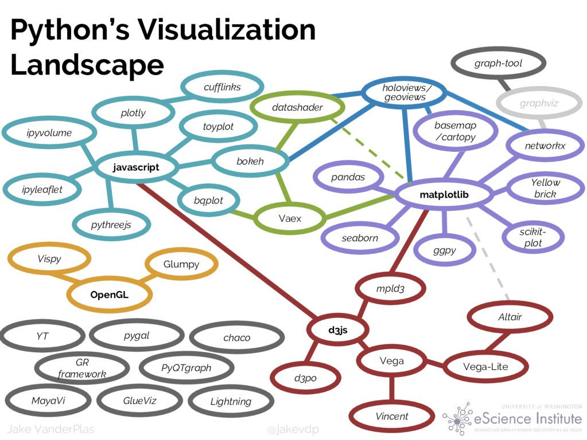
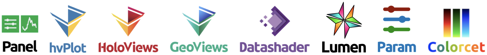
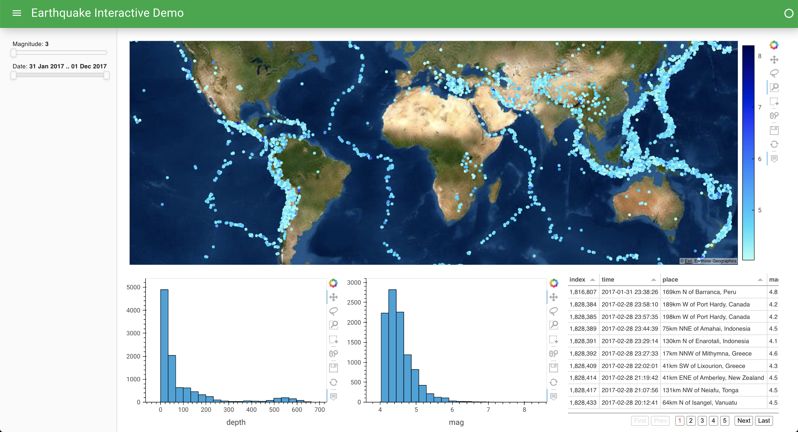

Overview#
Tutorial 1
Welcome to HoloViz!
HoloViz is a set of compatible tools to make it easier to see and understand your data at every stage needed by users, research groups, and projects:
importing and cleaning
initial exploration
testing hypotheses
generating accurate and convincing figures
sharing and deploying live apps
improving and adapting each stage over time
Why “Holo”? “holo-”, from the Greek root “hólos”, means “whole, entire, complete”.
Doesn’t Python already cover all these stages?#
Sure! That’s how it ended up with all the tools listed at PyViz.org, including:

Why so many tools?#
Because each tool is typically limited to one or two of the stages in the data life cycle, supporting some well but not the others:
Simple, quick plots, but limited in capabilities, customization, and compositionality.
Deep capabilities for print-based plots, but weak or no support for custom interactivity in web apps.
Good interactivity in Jupyter, but weak or no support for batch processing or deployed servers.
Good support for deployed servers, but weak or no support for Jupyter or interactive exploration in general.
Good support for small datasets or heavily aggregated data, but not suitable for exploring the full raw data
How does HoloViz help?#
To avoid having to abandon all your work on one stage to reach the next, HoloViz tools reduce friction and gaps between the stages:
All tools support web browsers, so you can always share results and use remote data or compute.
Even so, plots are built in Python, not web tech (JS/CSS), to support exploratory analysis.
You can use the same tools whether your data fits in a browser tab or requires server-side rendering.
All interactivity works the same in Jupyter and in a standalone deployment.
High-level (quick and convenient) interfaces are shortcuts, not dead ends, so you don’t get stuck.
Where feasible, functionality is provided using the APIs you already know, so you don’t have to learn new concepts unnecessarily
HoloViz libraries#

With the above design goals in mind, we have developed a set of independent but complementary open-source Python packages to streamline the process of working with small and large datasets (from a few datapoints to billions or more) in a web browser, whether doing exploratory analysis, making simple widget-based tools, or building full-featured dashboards. The main libraries in this ecosystem include:
Panel: Assembling objects from many different libraries into a layout or app, whether in a Jupyter notebook or in a standalone servable dashboard
hvPlot: Quickly returning Bokeh/Matplotlib/Plotly-based HoloViews plots from Pandas, Xarray, or other data structures
HoloViews: Declarative objects for instantly visualizable data, building Bokeh/Matplotlib/Plotly plots from convenient high-level specifications
GeoViews: Visualizable geographic data that that can be mixed and matched with HoloViews objects
Datashader: Rasterizing huge datasets quickly as fixed-size arrays or images
Lumen: Building Panel dashboards with HoloViews plots from a text file (low code) or GUI or LLM (no code)
Param: Declaring user-relevant parameters, making it simple to work with widgets inside and outside of a notebook context
Colorcet: Perceptually accurate continuous and categorical colormaps for any viz tool
These libraries work with and are built upon many other familiar open source libraries.

HoloViz currently covers this subset of viz tools

These tools are the most fully supported and are often entirely sufficient on their own.
The HoloViz tutorial#
In this tutorial, we’ll focus on an example set of data about earthquake events, using it to illustrate how to build a dashboard such as this one:

Each of the HoloViz tools provides its own API for accessing the functionality it implements (and sometimes more than one API, for different purposes!). For this tutorial, we will focus on the following APIs that we believe provide the most power to new users for the smallest investment of time and effort:
hvPlot
.plot()API, bringing interactivity, large-data handling, and multidimensional exploration to the same API you already know from Pandas, Xarray, and Dask.Panel
.rx()API, bringing reactive expressions to Python that let make your existing workflows interactive by adding widgets and laying out the results into Jupyter cells or web pages.
This functionality builds on the native APIs for all the other libraries discussed above (plus many others in the SciPy/PyData ecosystem!), but in many cases hvPlot .plot() and a bit of Panel are all you need to learn to get your work done!